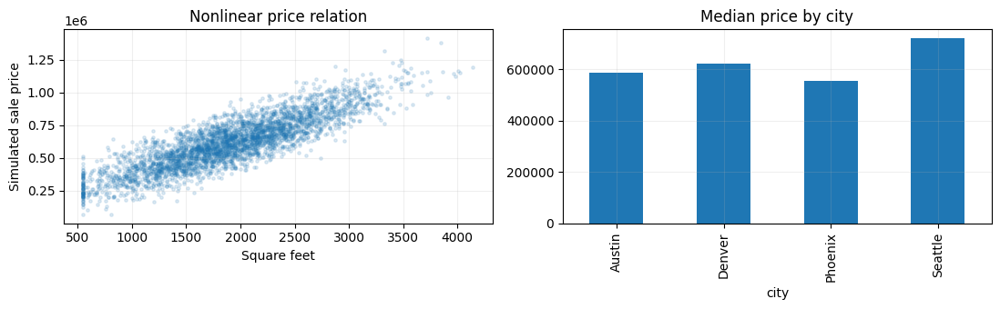
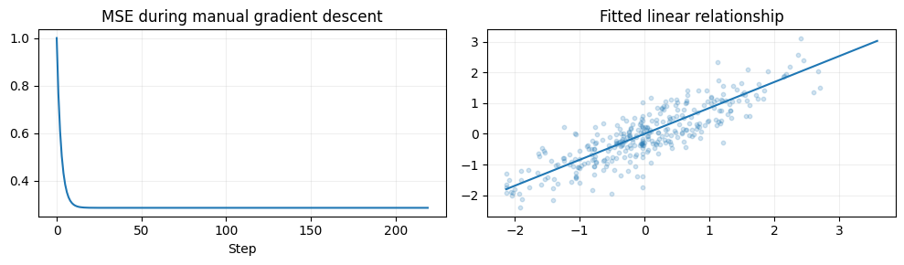
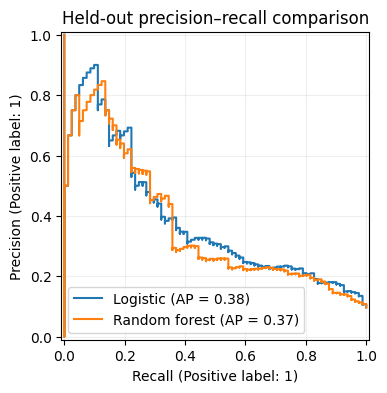

import numpy as np
import pandas as pd
import matplotlib.pyplot as plt
from sklearn.model_selection import train_test_split
SEED = 42
rng = np.random.default_rng(SEED)
plt.rcParams.update({'figure.figsize': (8, 4), 'axes.grid': True, 'grid.alpha': 0.2})Project 01 · Housing Prices & Delinquency: Regression from Scratch
Track: Machine Learning
Research / product question: Can property features explain prices, and can origination features predict 12-month delinquency?
Learning outcome: Optimization, tabular preprocessing, Ridge/RandomForest, LogisticRegression, PR-AUC and leakage safeguards.
Workflow: Data-generating process → raw-data audit → leakage-safe features → from-scratch baseline → model selection / hyperparameter tuning → held-out evaluation → failure analysis.
Synthetic-data disclosure: All records and outcomes are created in this notebook; they do not describe real customers or credit decisions. Ground truth is constructed for teaching. Numerical results are illustrative of this simulator, not estimates of real-world business impact.
Reproducibility: Random seeds are fixed. Run cells top-to-bottom. Install packages from the project-level requirements.txt. CPU execution is supported; deep-learning examples deliberately use small models.
Portfolio standard: fully reproducible, synthetic educational data · explicit evaluation protocol · plots and failure analysis · no claims of production accuracy.
Two supervised targets are deliberately separate: dollar house price and future mortgage delinquency. Missingness is imputed inside fitted pipelines so test-set statistics never influence training.
1. Simulate raw housing and mortgage records
The simulator contains a nonlinear price function and a separate credit-risk mechanism. Missing values are inserted after outcomes are generated. future_delinquent must never enter the feature matrix.
# Reproduce results from a single random seed. All generated records are fictional.
n=3800
city=rng.choice(['Austin','Denver','Phoenix','Seattle'],n,p=[.27,.24,.29,.20]); city_effect={'Austin':.10,'Denver':.15,'Phoenix':-.05,'Seattle':.52}
area=np.clip(rng.normal(1900,650,n),550,4400)
beds=np.clip(np.rint(area/650+rng.normal(0,.6,n)),1,6)
age=rng.integers(0,65,n)
credit=np.clip(rng.normal(707,68,n),500,850)
ltv=np.clip(rng.normal(.79,.12,n),.40,1.08)
dti=np.clip(rng.normal(.36,.11,n),.08,.75)
rate=np.clip(rng.normal(6.3,.9,n),3,10)
price=120000+area*210+35000*beds+np.array([city_effect[c] for c in city])*300000-1700*age+0.009*(area-1800)**2+rng.normal(0,68000,n)
logit=-3.45+1.1*(ltv-.75)/.15+1.3*(dti-.35)/.15-.92*(credit-700)/75+.30*(rate-6)
prob=1/(1+np.exp(-logit));bad=rng.binomial(1,prob)
raw=pd.DataFrame({'city':city,'sqft':area,'bedrooms':beds,'property_age':age,'credit_score':credit,'ltv':ltv,'dti':dti,'mortgage_rate':rate,'sale_price':price,'future_delinquent':bad})
for col in ['sqft','credit_score','dti']:
ix=rng.choice(n,int(n*.045),replace=False);raw.loc[ix,col]=np.nan
print('Shape:',raw.shape,'Missing rates:\n',raw.isna().mean().round(3).to_string())
print('Delinquency prevalence:',round(raw.future_delinquent.mean(),3))
fig,ax=plt.subplots(1,2,figsize=(11,3.5));ax[0].scatter(raw.sqft,raw.sale_price,alpha=.14,s=6);ax[0].set(xlabel='Square feet',ylabel='Simulated sale price',title='Nonlinear price relation');raw.groupby('city').sale_price.median().plot.bar(ax=ax[1],title='Median price by city');plt.tight_layout();plt.show()Shape: (3800, 10) Missing rates:
city 0.000
sqft 0.045
bedrooms 0.000
property_age 0.000
credit_score 0.045
ltv 0.000
dti 0.045
mortgage_rate 0.000
sale_price 0.000
future_delinquent 0.000
Delinquency prevalence: 0.097
2. Data engineering and leakage-safe preprocessing
Train/test split happens before fitting imputers, scalers and encoders. Pipelines keep every transformation inside CV folds. The validation score drives selection; test data are used only once.
# Introduce geography, pricing drivers and a separate delinquency outcome.
from sklearn.compose import ColumnTransformer
from sklearn.pipeline import Pipeline
from sklearn.impute import SimpleImputer
from sklearn.preprocessing import OneHotEncoder, StandardScaler
from sklearn.linear_model import Ridge, LogisticRegression
from sklearn.ensemble import RandomForestRegressor, RandomForestClassifier
from sklearn.model_selection import GridSearchCV
from sklearn.metrics import mean_absolute_error, r2_score, average_precision_score, roc_auc_score, PrecisionRecallDisplay
features=['city','sqft','bedrooms','property_age','credit_score','ltv','dti','mortgage_rate']
X=raw[features];train_idx,test_idx=train_test_split(np.arange(n),test_size=.22,random_state=42,stratify=raw.future_delinquent)
def prep():
return ColumnTransformer([('num',Pipeline([('fill',SimpleImputer(strategy='median')),('scale',StandardScaler())]),[x for x in features if x!='city']),('city',OneHotEncoder(handle_unknown='ignore'),['city'])])
print('Train / held-out test:',len(train_idx),len(test_idx))Train / held-out test: 2964 8363. Write gradient descent (one variable) yourself
First optimize a simple standardized square-feet-only model by minimizing mean squared error. This isolates the gradient mechanics; multivariate models below use validated library implementations.
# Fit imputers and encoders on training folds only; protect held-out rows.
x_train=raw.loc[train_idx,'sqft'].fillna(raw.loc[train_idx,'sqft'].median()).to_numpy()
y_train=raw.loc[train_idx,'sale_price'].to_numpy()
x0=(x_train-x_train.mean())/x_train.std();y0=(y_train-y_train.mean())/y_train.std()
w,b=0.,0.;losses=[]
for step in range(220):
err=w*x0+b-y0
losses.append(np.mean(err**2))
w-=0.09*2*np.mean(err*x0);b-=0.09*2*np.mean(err)
fig,ax=plt.subplots(1,2,figsize=(10,3));ax[0].plot(losses);ax[0].set(title='MSE during manual gradient descent',xlabel='Step');ax[1].scatter(x0[::9],y0[::9],alpha=.2,s=10);order=np.argsort(x0);ax[1].plot(x0[order],w*x0[order]+b);ax[1].set(title='Fitted linear relationship');plt.tight_layout();plt.show()
print('Learned standardized weight:',round(w,3))
Learned standardized weight: 0.8464. Hyperparameter search: housing-price regression
Use five-fold CV on the training subset to compare a regularized linear baseline with a nonlinear random forest. Negative MAE is maximized by GridSearchCV.
# Implement gradient descent by differentiating squared error, without sklearn.
reg_models={
'Ridge':(Ridge(),{'model__alpha':[.1,10,100]}),
'Random forest':(RandomForestRegressor(random_state=42,n_jobs=1),{'model__n_estimators':[65],'model__max_depth':[7,13]})}
reg_fits={}
for name,(est,grid) in reg_models.items():
gs=GridSearchCV(Pipeline([('prep',prep()),('model',est)]),grid,scoring='neg_mean_absolute_error',cv=3,n_jobs=1)
gs.fit(X.iloc[train_idx],raw.sale_price.iloc[train_idx]);reg_fits[name]=gs
print(name,'CV MAE:',round(-gs.best_score_,1),'best:',gs.best_params_)
price_scores={name:mean_absolute_error(raw.sale_price.iloc[test_idx],fit.predict(X.iloc[test_idx])) for name,fit in reg_fits.items()}
print('TEST price MAE:',{k:round(v) for k,v in price_scores.items()})Ridge CV MAE: 58166.7 best: {'model__alpha': 0.1}
Random forest CV MAE: 62927.3 best: {'model__max_depth': 13, 'model__n_estimators': 65}
TEST price MAE: {'Ridge': 57489, 'Random forest': 62277}5. Tune a second, genuinely different target: delinquency
For imbalanced default events, Average Precision / PR-AUC is usually more informative than accuracy. Do not use observed future delinquency as a predictor.
# Use cross-validation for hyperparameters; preserve the test set.
clf_models={
'Logistic':(LogisticRegression(max_iter=350),{'model__C':[.1,1.,10.]}),
'Random forest':(RandomForestClassifier(n_estimators=90,random_state=42,n_jobs=1,class_weight='balanced_subsample'),{'model__max_depth':[4,8],'model__min_samples_leaf':[10]})}
clf_fits={}
for name,(est,grid) in clf_models.items():
gs=GridSearchCV(Pipeline([('prep',prep()),('model',est)]),grid,scoring='average_precision',cv=3,n_jobs=1)
gs.fit(X.iloc[train_idx],raw.future_delinquent.iloc[train_idx]);clf_fits[name]=gs
print(name,'CV AP:',round(gs.best_score_,3),'best:',gs.best_params_)
y_test=raw.future_delinquent.iloc[test_idx]
fig,ax=plt.subplots(figsize=(7,4))
for name,fit in clf_fits.items():
p=fit.predict_proba(X.iloc[test_idx])[:,1]
PrecisionRecallDisplay.from_predictions(y_test,p,ax=ax,name=name)
print(name,'held-out AP',round(average_precision_score(y_test,p),3),'ROC-AUC',round(roc_auc_score(y_test,p),3))
ax.set(title='Held-out precision–recall comparison');plt.show()Logistic CV AP: 0.435 best: {'model__C': 1.0}
Random forest CV AP: 0.368 best: {'model__max_depth': 4, 'model__min_samples_leaf': 10}
Logistic held-out AP 0.384 ROC-AUC 0.814
Random forest held-out AP 0.367 ROC-AUC 0.791
What the results mean / interview discussion
The same tabular predictors support two distinct problems: predicting a continuous price and estimating the probability of a rare delinquency event. The simulator includes nonlinear signal, so a flexible model may improve pricing; however, a calibrated simple baseline is essential for credit risk. Real credit models additionally require fairness, validation, compliance and time-based out-of-sample testing.
Try explaining these without looking at the code:
- What is the difference between RMSE, MAE and average precision?
- Where could future information leak into this dataset?
- Why might the best CV model underperform after a rate regime change?
Limitations and next step: Evaluate on a suitably licensed real-world dataset or stronger simulation with domain shift, logging bias and realistic selection. Never treat synthetic performance as production evidence.
What this project demonstrates, and what it does not
Next: incorporate geographic holdout, calibration curves, macro stress regimes, and time-aware mortgage validation. A credit model built on this synthetic data must never be used to make lending decisions.
Reproduce: Run All in Jupyter; no private or uploaded data required. For real data, use leakage-safe train/validation/test partitions and respect each dataset license.